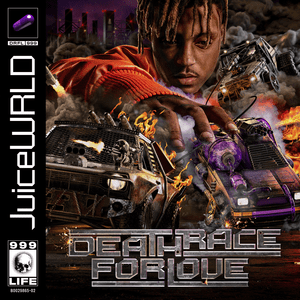

The first and my favorite artist of all time is Jarad Higgins, or Juice WRLD. Since 2018 I've been listening to Juice WRLD, and after his death in December 2019 nothing about that changed.
From the moment I heard his voice and lyrics, Jarad resonated with me. See for me as a young man growing up all I ever wanted was to be a loved husband and father. But life does not let love come easy for everyone.
I felt as if love was not meant for me. This was heavy for me to live with, many mental battles followed. Life at this point felt as low as it could be. What was I to look forward to if there was no love in my future?
I was headed to a point of no return, until the music of Jarad was presented to me off the whim of a simple YouTube algorithm generating the next video it assumed I'd want to see. From this moment of discovery I began to truly learn how deep the hole can become. See Jarad did not just deal with emotions using music as an outlet, he abused opioids to the point of no return.
I can't speak on drug addiction personally because I dodged it, but the only reason for that was because Jarad didn't. He showed me that attempting to fill the void with drugs would never work, and he is the only reason why I never started.
There are too many songs for me to show from Jarad, so for this project I chose "Confide". An officially unreleased song, but one I believe should be heard.